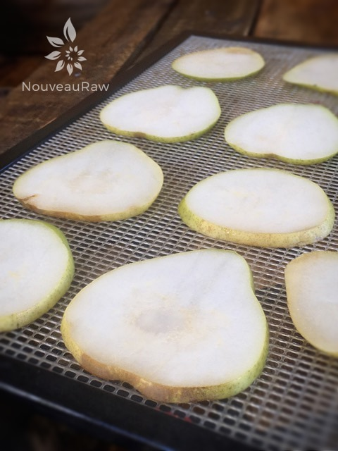

Dehydrated Pears

~ raw, dehydrated ~
Dehydrated pears are sweet and chewy, and totally portable, making them great for sack lunches or snacks when you’re hiking. Start dehydrating pears when they are in season so you and your family can enjoy them all year long!
I have been dehydrating pears for over four years steady and I often have people question the texture. They said that their dried pears always seem gritty. This gritty texture that some pears have comes from tough cells called scleroids. This is found under the skin, so peeling the pears before dehydrating them results in a better texture. I don’t always peel mine but keep that in mind.
Some people like to create a solution (1 tablespoon vinegar or lemon juice per quart of water) to help prevent browning. I never do and you can see that mine in the photo are a nice creamy color.
If you use pears that are too ripe, you will end up with paper-thin slices that most likely won’t want to leave the dehydrator tray in one piece. So, if your pears have reached that stage it is best to just roll up your sleeves and enjoy them one bite at a time. You can also make fruit leathers out of them. Click (here) to get some recipe ideas.
Enjoy. Many blessings, amie sue
Ingredients:
Preparation:
- Wash, dry, and slice the pears.
- I prefer to use a mandolin to control the thickness of the cuts, but a sharp knife can be used as well.
- It is best to make the cuts evenly so they all dry at in the same time frame.
- Arrange the pear slices in a single layer on dehydrator trays. Be sure to leave space for air circulation between the pear slices (none of the slices should be touching).
- Dehydrate at 145 degrees (F) for 1 hour, then reduce to 115 degrees (F) for 6-24 hours.
- The length of time needed to dry fruits will depend on the size of the pieces being dried, humidity, and the amount of air circulation in the dehydrator.
- Also, keep in mind that thinner slices and smaller pieces will dry more quickly than larger ones.
- Allow to cool, they should be leathery and pliable.
Storing:
- Pack cooled dried pears in small amounts in mason glass jars or any type of airtight container or bag.
- Packaging warm dried peaches can cause moisture in the container which will create a breeding ground for mold.
- Package in small amounts. Every time a package is re-opened, the food is exposed to air and moisture that will lower the quality of the food.
- Label packages with the name of the product and date.
- Tightly seal containers to prevent reabsorption of moisture or entry of insects.
- Store in a cool, dry, dark place or in the refrigerator or freezer. Properly stored, dried fruits keep well for six to 12 months.
- Discard if they have off odors or show signs of mold.
Culinary Explanations:
- Why do I start the dehydrator at 145 degrees (F)? Click (here) to learn the reason behind this.
- When working with fresh ingredients it is important to taste test as you build a recipe. Learn why (here).
- Don’t own a dehydrator? Learn how to use your oven (here). I do however truly believe that it is a worthwhile investment. Click (here) to learn what I use.

© AmieSue.com